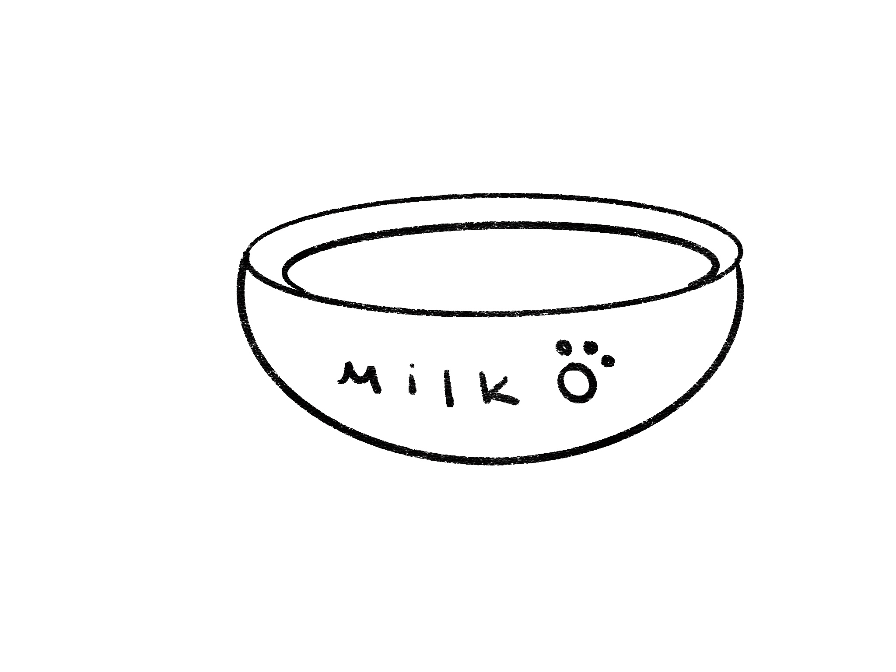

Biking through the darkness, I reach a dead end of the paw prints in the forest. Lost, I decided to pick apart the pieces of bread and scatter them around me in hopes of guiding the cat to me. I finally place a bowl of milk right next to me as I sit down on the tree bark on the ground. I waited here for what seemed like hours on end. Hoping that the cat could come here sooner. All I could think about was what I could buy with $1,000. A new bike? Nono a new phone? There’s so much to think about.
